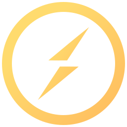
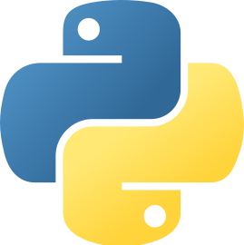
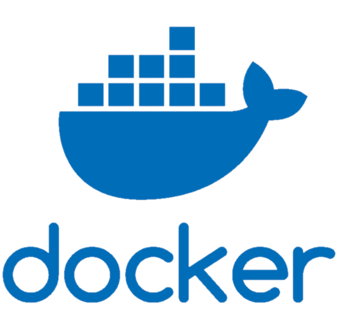
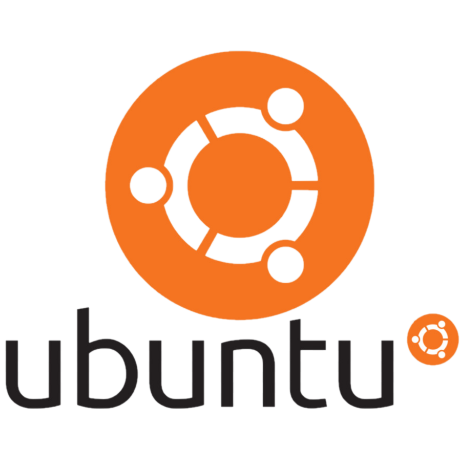
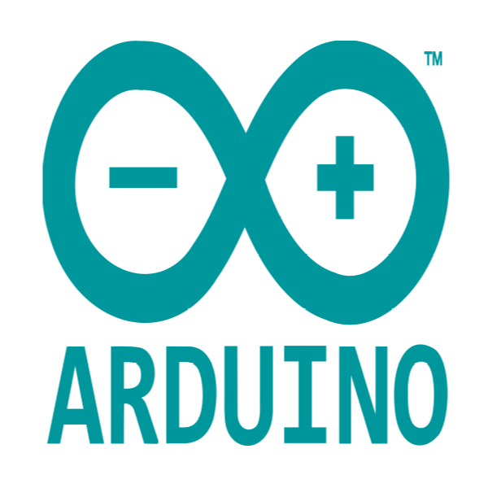
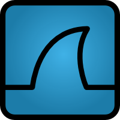
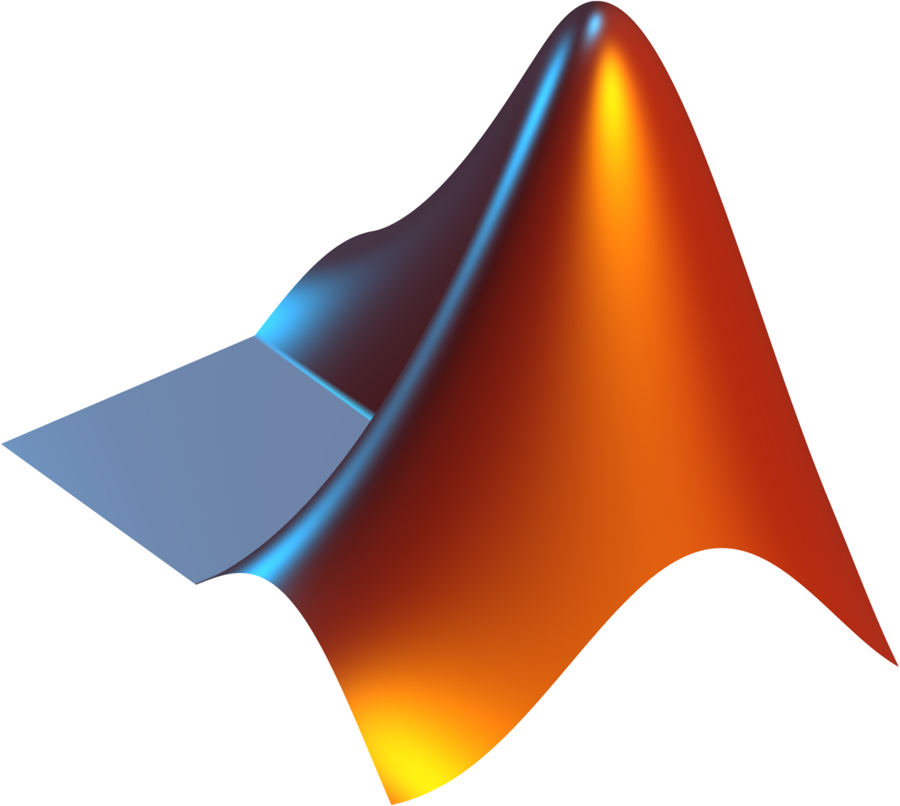

Developer growing through challenges
도전으로 성장하는 임베디드 감각의 소프트웨어 개발자.
디지털 시스템, 컴퓨터 구조, 네트워크, 컴퓨터 비전을 넘나들며 실제 하드웨어와 연결되는 소프트웨어 경험을 쌓고 있습니다.
About
하드웨어와 소프트웨어가 만나는 지점을 좋아합니다.
저는 성균관대학교에서 전자전기공학과 소프트웨어학을 복수전공하고 있습니다. 전공의 접점에서 디지털 회로, 시스템 구조, 네트워크 통신, 컴퓨터 비전처럼 실제 장치와 가까운 소프트웨어에 관심을 두고 있습니다.
아직 하나의 진로로 좁히기보다 다양한 프로젝트와 대회, 교육 경험을 통해 문제를 다루는 폭을 넓히고 있습니다. 좋은 개발자로 성장하기 위해 실패를 빠르게 배우고, 다시 구현하고, 더 나은 방향을 찾는 과정을 중요하게 생각합니다.
def grow(knowledge = 0):
try:
learn_more()
except Failure:
do_not_give_up()
grow(knowledge + 1)
grow()Focus
지금 공부하고 사용하는 것들
관심 분야와 도구를 분리해서 보여주되, 모바일에서도 한눈에 스캔되도록 구성했습니다.
Digital System
VHDL/Verilog 기반 디지털 시스템 설계를 학습합니다.
Computer Architecture
Intel x86 및 RISC-V ISA 기반 컴퓨터 구조를 공부합니다.

Network Programming
Socket I/O와 TCP/IP 통신에 관심을 갖고 있습니다.
Computer Vision
자율주행과 연결되는 이미지 처리 및 비전 시스템을 탐구합니다.

Python
Docker
Ubuntu
Arduino
Wireshark VHDL
VHDL
MatlabPublications
연구 발표와 관련 작업
Publication Overview
Autonomous Driving
Embedded / Digital Systems
Security & Automation
[C2]
Feedback Parking System Using Bezier Curve-Based Path Planning and Machine Learning Techniques
2024 KSAE Fall Conference, Special Session on Future Automobiles
Conference
Nov 2024
Presented
[C1]
Driving Stabilization and Latency Optimization via UART Communication-Based Split Byte Command Protocol
2024 KSAE Fall Conference, Special Session on Future Automobiles
Conference
Nov 2024
Encouragement Award / Challenge Award
[R1]
성균관대학교 자율주행 SW 경진대회 연구/구현 기록
Path planning, control, and embedded communication work from autonomous driving competitions.
자세히 보기
Autonomous Driving
[P2]
웹 자동화 도구 분석을 통한 버그바운티 최적화
Security automation project analyzing web automation tools for bug bounty workflows.
자세히 보기
Security
[P1]
Resume
교육
Education
- 소프트웨어학 복수전공 2023년 2학기부터 소프트웨어학과 복수전공 시작
- 성균관대학교 전자전기공학부 전자전기공학과 소프트웨어학의 접점에서 학습 중
Experience
수상 및 연구 경험
Experience & Achievement
- 제3회 성균관대학교 자율주행 경진대회 대상 2025.07.18 / 성균관대학교 총장상
- 동계 학기 CO-OP 크로이스(주) AR-Guide 컴퓨터 비전 프로젝트 수행
- 2024 KSAE 추계학술대회 미래형 자동차 특별세션 논문 2편 제출 및 발표, 장려상/도전상 수상
- 2024 DNA Hero 프로젝트 SNN-ViT 혼합 구조 기반 한글 획 인식 시스템 연구
- KITRI 화이트햇 스쿨 1기 수료 보안 교육 과정 수료